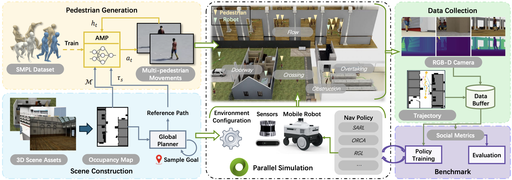

Robot autonomous navigation that accounts for surrounding human activities is crucial for ensuring both safety and natural human-robot interaction in real-world environments shared by humans and robots. Simulation of complex and diverse navigation scenarios serves as the foundation for training reliable robot navigation policies and accurately evaluating the performance of algorithms, offering an efficient alternative to manual supervision of real data. However, current human-aware navigation research faces significant challenges due to the scarcity of diverse, high-quality scene data. Existing simulation platforms often rely on handcrafted rules to approximate pedestrian behavior and lack the capability to provide extensive sensor signals, typically assuming perfect observations. To address these limitations, this paper presents NavIsaacLab, a comprehensive framework for benchmarking and training human-aware navigation policies through physics-based and photo-realistic simulations of pedestrians and scenes. Based on Isaac Lab, the proposed framework employs photo-realistic scene rendering capabilities and supports parallel simulation on GPU, delivering real-time and accurate 3D visual feedback to robots. To enhance the realism of human behavior, a data-driven approach is employed that incorporates a trajectory diffusion model and an adversarial motion learning controller, enabling controllable, physics-based pedestrian simulation. Furthermore, the integration of diverse cross-scale scenes provides a robust benchmark for state-of-theart human-aware navigation methods.

BibTex Code Here